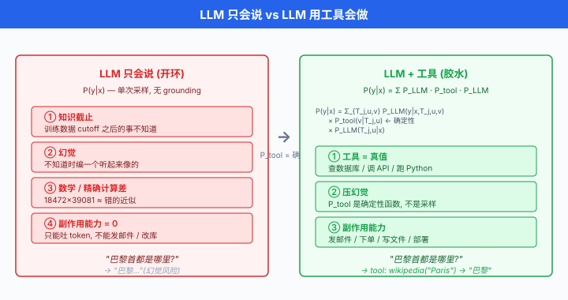
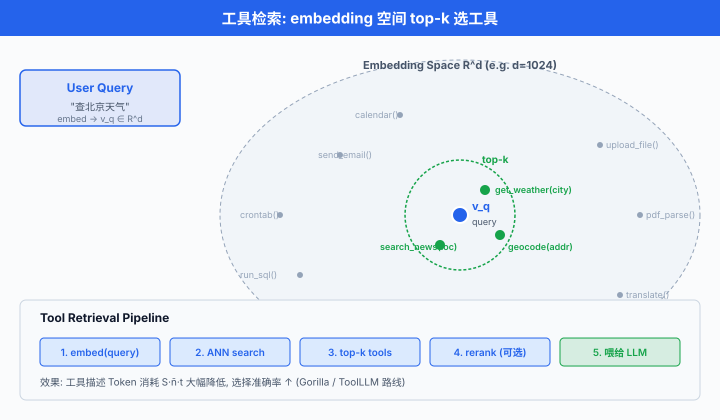

工具使用与函数调用¶
一句话总结：工具使用把 LLM 从"只会说"变成"会做"—— 通过 JSON Schema 声明工具、约束解码保证格式、检索选工具，让模型的每一次输出都能触发真实世界的 API 调用。
上一节讲了如何让 LLM 更会"想". 但一个只会想不会做的 Agent，顶多是个高级聊天机器人。 真正把 Agent 推入生产环境的，是工具使用 (tool use)：让 LLM 调用外部 API，查天气、算数学、发邮件、下订单。 从 Toolformer 让模型自学何时调工具，到 OpenAI Function Calling 用 JSON Schema 把工具标准化，再到 RAG 把检索当作特殊工具 —— 这一节讲清楚 Agent 手上"那把锤子"是怎么造出来的.
为什么 LLM 必须使用工具¶
-
一个 LLM，无论多大，有几个天生的短板:
-
知识截止：训练数据有 cutoff. GPT-4 不知道 2024 年之后的事，Claude 不知道你昨晚发的推文。 靠模型内部权重永远追不上现实。
- 幻觉：遇到不知道的事实，模型不会说"我不知道"，会编一个听起来很像的. Nakano et al. 2021 的 WebGPT 论文里，明确指出"grounding on retrieved evidence"是压幻觉的关键。
- 数学与精确计算: LLM 的算术是"背下来的近似". 让 GPT-4 心算 \(18{,}472 \times 39{,}081\)，大概率答错。 但让它写一行
18472 * 39081交给 Python，一定对。 -
副作用能力为零：模型只能吐 Token，不能发邮件、不能修改数据库、不能订机票。 想让 Agent 真正"动手"，必须给它接口。
-
一句话总结这四条：LLM 只会说，工具让它会做. 工具是 Agent 与真实世界之间的一层薄薄的胶水 —— 一头是模型生成的结构化调用意图，另一头是被执行的确定性代码。
-
数学化：令 \(\mathcal{T} = \{T_1, T_2, \dots, T_m\}\) 是可用工具集，每个工具 \(T_j: \mathcal{X}_j \to \mathcal{Y}_j\) 是一个从参数空间到返回空间的确定性函数。 引入工具后，Agent 的联合分布变成:
其中 \(u \in \mathcal{X}_j\) 是模型选择的参数，\(v = T_j(u) \in \mathcal{Y}_j\) 是工具返回。 关键：\(P_\text{tool}\) 是确定性的，不是模型采样出来的 —— 这就是工具压幻觉的数学根源。

Toolformer：让模型自学何时调工具¶
- Toolformer 由 Schick et al. 2023 提出 (Toolformer: Language Models Can Teach Themselves to Use Tools, arXiv:2302.04761). 核心贡献：不需要人工标注, LLM 自监督地学会"哪句话该在哪个位置插入哪个 API 调用".
完整流程¶
Toolformer 的训练流程分三步，对每一个训练文档 \(x = (t_1, t_2, \dots, t_n)\):
-
采样候选 API 调用：用 few-shot prompt 让 LLM 在每个位置 \(i\) 提议若干 API 调用 (如
[Calculator(3 * 4)], Toolformer 原文用方括号标记). 每个位置采样 \(k\) 个候选。 -
执行并过滤：真实执行每个 API 调用，拿到返回 \(r\). 只保留能"降低后续 Token perplexity" 的调用 —— 也就是真正对预测下文有帮助的。
-
微调：用带 API 调用标记的自增强数据继续预训练模型。 微调后，模型自发在推理时插入
[Calculator(...)]这类调用标记。
有用性打分公式¶
- 第 2 步的过滤准则是核心。 令 \(c_i = (\text{API name}, \text{args}) \to r\) 是位置 \(i\) 的候选调用及其返回。 令 \(L_i(z)\) 表示"在位置 \(i\) 前面拼接 \(z\)" 时模型对后续 Token 的加权交叉熵:
其中 \(w_{j-i}\) 是随距离衰减的权重 (远处 Token 影响力小).
- 定义"工具有用性" (utility) 为加了工具调用之后 loss 降低的量:
-
直觉：如果看到调用 + 结果比只看到调用或啥都没看到都要预测得更准，说明这个工具调用对建模有用。 只保留 \(U(c_i) > \tau\) (阈值) 的样本进入训练集。
-
这套 perplexity 驱动的过滤让 Toolformer 无需人工标注，就能筛出高质量"何时该用什么工具" 的示范样本。 Schick et al. 用 GPT-J-6B 微调，在 5 类工具 (calculator, calendar, search, translator, QA) 上打平甚至超过 GPT-3-175B 的 zero-shot 表现。
局限与后续¶
- Toolformer 每个 API 一次只能被调用一次 (无嵌套、无循环).
- 参数生成靠模型采样，复杂 API 会失败。
- 工具集固定在训练时，加新工具需重训。
- 这些局限催生了后续的 ToolLLM / ToolBench (Qin et al. 2023) 与 Gorilla LLM (Patil et al. 2023) —— 用更大的工具库 + 检索式选工具。
OpenAI Function Calling：工业界的事实标准¶
-
2023 年 6 月，OpenAI 发布 GPT-4 与 GPT-3.5-turbo 的 函数调用 (function calling) 能力。 关键动作：用 JSON Schema 声明可用函数，让模型输出结构化 JSON，而不是自然语言。
-
从 API 层面，这一步把"提示工程调工具"从玄学变成了工程：开发者不需要再写 few-shot 示例祈祷模型输出正确格式，只要给出 schema，模型就会保证输出符合 schema.
完整可跑示例¶
import json
from openai import OpenAI
client = OpenAI()
# 1. 用 JSON Schema 声明工具
tools = [
{
"type": "function",
"function": {
"name": "get_current_weather",
"description": "获取某个城市的实时天气",
"parameters": {
"type": "object",
"properties": {
"city": {
"type": "string",
"description": "城市名, 如 '北京' 或 'San Francisco'",
},
"unit": {
"type": "string",
"enum": ["celsius", "fahrenheit"],
"description": "温度单位",
},
},
"required": ["city"],
},
},
}
]
# 2. 真实工具实现
def get_current_weather(city: str, unit: str = "celsius") -> dict:
# 假装调用天气 API
return {"city": city, "temperature": 22, "unit": unit, "condition": "晴"}
# 3. 让模型看到工具, 并给它一个用户问题
messages = [{"role": "user", "content": "上海现在多少度?"}]
resp = client.chat.completions.create(
model="gpt-4",
messages=messages,
tools=tools,
tool_choice="auto", # 让模型自己决定要不要调用
)
msg = resp.choices[0].message
messages.append(msg)
# 4. 若模型选择调用工具, 解析参数并执行
if msg.tool_calls:
for call in msg.tool_calls:
fn_name = call.function.name
fn_args = json.loads(call.function.arguments) # ← 由模型输出的 JSON
result = get_current_weather(**fn_args)
# 把执行结果作为一条 tool message 回喂给模型
messages.append({
"role": "tool",
"tool_call_id": call.id,
"content": json.dumps(result, ensure_ascii=False),
})
# 5. 让模型基于工具结果给最终回答
final = client.chat.completions.create(
model="gpt-4",
messages=messages,
)
print(final.choices[0].message.content)
# 输出: "上海现在 22°C, 天气晴朗."
- 五个环节缺一不可：声明 → 调用 → 解析 → 执行 → 回喂. 这正是第 01 节
react_loop骨架里 "one step" 的完整实现。
关键设计选择¶
tool_choice:"auto"(模型决定),"none"(强制不用工具)，或{"type": "function", "function": {"name": "..."}}(强制用特定工具).description字段是关键：模型靠它判断何时调用。 描述越准确，命中率越高。 常见坑：描述写太笼统 → 模型什么都往这里调。required字段限制必填参数。 缺失时模型会尝试"补上" —— 有时会瞎编，需要在描述里明确"如果用户没说，请先反问".
JSON Schema 深入¶
- JSON Schema 是工具声明的通用语言，支持完整的类型系统。 常用类型:
{
"type": "object",
"properties": {
"count": {"type": "integer", "minimum": 1, "maximum": 100},
"score": {"type": "number", "minimum": 0, "maximum": 1},
"name": {"type": "string", "pattern": "^[a-zA-Z]+$"},
"active": {"type": "boolean"},
"tags": {"type": "array", "items": {"type": "string"}, "maxItems": 10},
"priority": {"type": "string", "enum": ["low", "medium", "high"]},
"metadata": {
"type": "object",
"properties": {
"author": {"type": "string"},
"version": {"type": "integer"}
},
"required": ["author"]
}
},
"required": ["count", "name"]
}
Anthropic Tool Use vs OpenAI Function Calling¶
- 语法略有不同，但概念一致。 对比表:
| 维度 | OpenAI Function Calling | Anthropic Tool Use |
|---|---|---|
| 顶层字段 | tools: [...] |
tools: [...] |
| 每个工具的结构 | {type: "function", function: {name, description, parameters}} |
{name, description, input_schema} |
| 参数字段名 | parameters (JSON Schema) |
input_schema (JSON Schema) |
| 模型输出的调用 | message.tool_calls[] |
content 里的 {type: "tool_use", ...} block |
| 参数编码 | arguments: "<JSON string>" (需 json.loads) |
input: <JSON object> (已解析) |
| 结果回喂 | role: "tool" message，带 tool_call_id |
role: "user", content 里 {type: "tool_result", tool_use_id, content} |
| 强制选择 | tool_choice: {"type": "function", "function": {"name": ...}} |
tool_choice: {"type": "tool", "name": "..."} |
| 并行调用 | 默认支持 | 默认支持 |
Anthropic 版本的示例:
import anthropic
client = anthropic.Anthropic()
tools = [{
"name": "get_current_weather",
"description": "获取某个城市的实时天气",
"input_schema": { # 注意字段名不同
"type": "object",
"properties": {
"city": {"type": "string"},
"unit": {"type": "string", "enum": ["celsius", "fahrenheit"]},
},
"required": ["city"],
},
}]
resp = client.messages.create(
model="claude-3-5-sonnet-latest",
max_tokens=1024,
tools=tools,
messages=[{"role": "user", "content": "上海现在多少度?"}],
)
# 找到 tool_use block
for block in resp.content:
if block.type == "tool_use":
print(block.name, block.input) # ← input 已是 dict, 无需 json.loads
常见坑¶
- 嵌套 schema 深度：超过 3 层嵌套时，模型经常忘记某个内部字段。 尽量扁平化。
- 数组 of objects:
{"type": "array", "items": {"type": "object", ...}}是常见踩坑点，模型有时会把 array 输出成单个 object. 描述里明确"哪怕只有一项也要用数组". - 枚举 vs 自由字符串:
enum会极大提升准确率. 能列出候选就用 enum. - 模型偏爱 snake_case：参数名
getUserById不如get_user_by_id，且user_id好于userId. 与训练数据分布有关。 - 描述里加示例:
"description": "日期, 格式 YYYY-MM-DD, 例如 '2024-01-15'"比只写 "日期" 命中率显著提升 (经验值，具体幅度视模型与任务而定).
Tool Grounding：约束解码保证格式¶
- 就算有 JSON Schema，模型仍然可能:
- 编一个不存在的工具名
- 用错误的参数类型 (把
int输出为"3") -
输出格式错误的 JSON (多逗号、字符串未闭合)
-
靠 API provider 自己保证格式 (如 OpenAI 的
response_format={"type": "json_object"}) 是一种做法。 更硬核的做法是 约束解码 (constrained decoding): 修改 Token 采样过程，让每一步只在"符合 schema"的 Token 上采样。
原理¶
- 在标准解码里，每步的 Token 分布是 \(P(t_i \mid t_{<i})\)，从整个词表采样。
- 约束解码在每一步计算允许的 Token 集合 \(\mathcal{V}_\text{allow}(t_{<i}, \text{grammar})\)，只在其上归一化:
- 只要 \(\mathcal{V}_\text{allow}\) 是根据 schema / grammar 计算的，生成结果必然合法 —— 不需要事后修复。
三个主流实现¶
- Outlines (Willard et al. 2023, Efficient Guided Generation for Large Language Models, arXiv:2307.09702)：把正则表达式或 JSON Schema 编译成有限状态机 (FSM)，每一步查 FSM 允许哪些 Token.
import outlines
model = outlines.models.transformers("mistralai/Mistral-7B-v0.1")
schema = """
{
"type": "object",
"properties": {
"name": {"type": "string"},
"age": {"type": "integer", "minimum": 0, "maximum": 150}
},
"required": ["name", "age"]
}
"""
# 生成必然符合 schema 的 JSON
generator = outlines.generate.json(model, schema)
result = generator("给我描述一个名叫爱因斯坦的物理学家.")
# result = {"name": "Albert Einstein", "age": 76} ← 一定合法
- GBNF grammar in llama.cpp：用 GGML 版 BNF 语法约束。 常用于本地 LLM.
-
JSON mode / structured outputs: OpenAI (2024-08 起) 与 Anthropic 都支持"保证输出符合 schema"的模式，底层就是约束解码。
-
LMQL (Beurer-Kellner et al. 2023) 与 guidance (Microsoft) 库更进一步，允许在生成中间插入条件，例如"这个字段必须是候选列表中的一个"，类似 SQL 查询的方式约束 LLM.
约束解码 vs 事后校验¶
| 维度 | 约束解码 | 事后校验 (JSON schema validate) |
|---|---|---|
| 输出合法性 | 保证 | 需重试或人工修复 |
| 性能开销 | 每步查表，有少量额外延迟 (经验值) | 无 |
| 灵活性 | 需接入模型 logits (本地 / 特定 API) | 任何 API 都能用 |
| 语义正确性 | 只保证格式，不保证内容对 | 同 |
- 结论：生产系统里 两者叠加 —— 用约束解码保格式合法，用业务规则做二次校验保语义合理。
Tool 选择策略：从工具海里挑对的¶
- 简单场景 5-10 个工具，全部塞进 prompt 里就够。 但一个成熟 Agent 可能挂着几百上千个工具 (每个 REST endpoint 都可以是工具). 全塞进 context，光工具描述就占几万 Token，成本爆炸。
Top-k 检索式选工具¶
-
思路：把每个工具的 (name + description) 用 embedding 模型向量化，用户问题也向量化，检索相似度最高的 top-\(k\) 塞进 prompt.
-
相似度用余弦:
其中 \(\mathbf{e}_q, \mathbf{e}_{T_j} \in \mathbb{R}^d\) 是 embedding 向量。
- 关键工程细节:
- 工具描述必须写得像用户会问的话. 描述"CRUD 用户表" 不如 "创建、查询、修改、删除用户信息". 后者更贴近用户 query.
- 加合成 query：用 LLM 从每个工具生成 5-10 个"用户可能会这么问"的示例，一起进 embedding 库。 这是 ToolBench 的经典技巧。
- \(k\) 一般设 5-20. 太小可能漏，太大又回到 context 爆炸。
Hierarchical 分层选工具¶
- 工具数量再大 (5000+), Top-k 也会退化。 分层做法：先把工具分成大类 (
旅行,财务,办公, ...)，用户 query 先走分类模型 / LLM 分类选类别，再在类别内做 Top-k.
ToolLLM / ToolBench¶
-
Qin et al. 2023 (ToolLLM: Facilitating Large Language Models to Master 16000+ Real-world APIs, ICLR 2024, arXiv:2307.16789) 构建了 ToolBench：从 RapidAPI Hub 收集了 16000+ 个真实 API，覆盖数千个工具。 训练 ToolLLaMA 模型能在这个巨型工具库上做多步调用。 (具体拆分请以原论文最新版为准.)
-
关键技术:
- DFSDT (Depth-First Search-based Decision Tree)：类似上一节的 ToT，在工具选择上做搜索，允许回溯。
- API Retriever：从 16K+ API 中检索 top-5 候选给 LLM.
-
数据合成：用 ChatGPT 生成 (query, API 调用序列) 的大规模指令训练数据 (原文数据集为 ToolBench，规模约十万条量级).
-
一段简化的检索 + 调用骨架:
def toolllm_step(query, tool_retriever, llm, k=5):
"""
ToolLLM 风格: 先检索工具, 再让 LLM 从候选里选并调用.
"""
# 1. 向量检索 top-k 候选工具
candidates = tool_retriever.search(query, k=k)
# 2. 把候选工具的 schema 塞进 prompt
tools_desc = "\n".join(f"- {t.name}: {t.description}" for t in candidates)
prompt = f"""你可以调用下面 {k} 个工具:
{tools_desc}
请选择一个工具并给出参数. 用 JSON 输出:
{{"tool": "<name>", "args": {{...}}}}
用户问题: {query}
"""
# 3. 让 LLM 输出选择
resp = llm.generate(prompt, response_format="json")
choice = json.loads(resp)
# 4. 执行工具
tool = next(t for t in candidates if t.name == choice["tool"])
return tool(**choice["args"])
- 相关工作 Gorilla LLM (Patil et al. 2023, Gorilla: Large Language Model Connected with Massive APIs, arXiv:2305.15334) 走另一条路：直接微调一个 LLaMA 让它记住 HuggingFace + TensorHub + TorchHub 三大 model zoo 的 API. 论文报告了在 API 调用准确率与幻觉率两个维度上相对 GPT-4 zero-shot 的显著改进 (具体数字见原文表格).

RAG 作为一种特殊工具¶
-
检索增强生成 (Retrieval-Augmented Generation, RAG) 由 Lewis et al. 2020 提出 (Retrieval-Augmented Generation for Knowledge-Intensive NLP Tasks, NeurIPS 2020). 本质是：调用"搜索"这一个工具，把结果作为上下文注入回 prompt.
-
从 Agent 视角，RAG 就是最流行的一种 tool. 它有两个特殊之处让人愿意单独讨论:
-
返回内容是自然语言 chunk 序列，而不是结构化数据。 需要"塞回 prompt 让模型读"这一步。
- 通常是pipeline 而非单一 API call:
chunk → embed → retrieve → rerank → generate.
RAG 的数学定义¶
- 令 \(x\) 是用户问题，\(\mathcal{D}\) 是文档库。 RAG 生成答案的概率:
其中:
- \(P_\text{ret}(C \mid x)\)：检索模型给出的 top-\(k\) 上下文分布。
-
\(P_\text{gen}(y \mid x, C)\)：生成模型在看到 \(x\) 和检索到的 \(C\) 后的答案分布。
-
实践中不做完整边缘化，而是 \(C^* = \arg\max_C P_\text{ret}(C \mid x)\)，然后 \(y \sim P_\text{gen}(y \mid x, C^*)\).
完整 pipeline¶
-
五步流水线:
-
Chunk：把长文档切成 200-1000 Token 的块 (常用 recursive character splitter, semantic splitter).
- Embed：每块过 embedding 模型 (
text-embedding-3-small,bge-large,nomic-embed-text等)，存入向量数据库 (Chroma, Qdrant, Milvus, pgvector). - Retrieve：用户 query 也 embed, ANN 检索 top-\(k\) (通常 \(k = 5 \sim 20\)).
- Rerank (可选但强烈推荐)：用 cross-encoder (如
bge-reranker-large, Cohere Rerank) 精排 top-\(k\)，只保留 top-\(n < k\). Cross-encoder 比 bi-encoder 准很多，但慢，只在 top-\(k\) 内排。 -
Generate：把 top-\(n\) chunk 拼进 prompt，让 LLM 生成答案。 关键是明确告诉模型"只用上下文里的内容，上下文没有就说不知道"，否则模型会跳出上下文自由发挥。
-
简化代码:
def rag_pipeline(query: str, docs: list, embedder, reranker, llm, k=20, n=5):
"""
Retrieval-Augmented Generation 五步 pipeline.
参考: Lewis et al. 2020 (NeurIPS 2020).
"""
# 1. Chunk (假设 docs 已经切好, 每个 doc 一个 chunk)
# 2. Embed + 存库 (离线, 这里假设已经建好)
# vector_store 已有所有 chunk 的 embedding
# 3. Retrieve
q_emb = embedder.embed(query)
top_k = vector_store.search(q_emb, k=k) # 返回 k 个 chunk
# 4. Rerank (cross-encoder 精排)
scored = reranker.rank(query, top_k)
top_n = scored[:n]
# 5. Generate
context = "\n\n".join(f"[{i}] {c.text}" for i, c in enumerate(top_n))
prompt = f"""基于下面的上下文回答问题. 如果上下文没有相关信息, 直接说 "不知道".
上下文:
{context}
问题: {query}
答:"""
return llm.generate(prompt)
RAG vs 普通 Tool Call 的区别¶
| 维度 | 普通 Tool Call | RAG |
|---|---|---|
| 输入 | 结构化参数 (JSON) | 自然语言 query |
| 输出 | 结构化返回 (JSON) | 自然语言 chunk 序列 |
| 触发方式 | LLM 显式选择工具 | 通常在 prompt 前无条件预检索 |
| 集成方式 | ReAct 循环里的一次 Action | 通常是 prompt 构造的一部分 |
| 用途 | 执行副作用 / 精确计算 / 查特定字段 | 补充背景知识 |
- 现代 Agent 里 RAG 与 tool call 往往并存: RAG 提供背景，tool call 执行动作。
多工具组合的三种模式¶
- 真实任务往往需要多个工具协同. 常见三种组合模式:
顺序 (Sequential)¶
- 先做 A 再做 B, B 依赖 A 的结果。
- 例："订下周去东京最便宜的机票" →
查天气 → 查签证要求 → 查机票 → 订机票. - ReAct 循环天然处理这种模式：每一次 Action 的 Observation 作为下一次 Thought 的输入。
并行 (Parallel)¶
- 同时调用多个不依赖彼此的工具。
- 例："同时查北京、上海、深圳今天的天气" → 三次
get_weather并行发出。 - OpenAI Function Calling 与 Anthropic Tool Use 都原生支持：模型可以在一次输出里返回多个
tool_calls，客户端并行执行 (asyncio.gather或线程池).
import asyncio
async def run_tool_call(call):
fn = TOOL_REGISTRY[call.function.name]
args = json.loads(call.function.arguments)
return await fn(**args)
# 模型输出多个 tool_calls
results = await asyncio.gather(*[run_tool_call(c) for c in msg.tool_calls])
- 延迟从 \(N \cdot t\) 降到 \(\max(t_i)\). 对多城市查询这种任务，加速比明显 (经验值，具体倍数取决于 API 数量与延迟分布).
条件 (Conditional)¶
- 根据前一步结果分支。
- 例：
查库存→ 若 > 0 则下订单，若 = 0 则发缺货通知. - 用 ReAct + CoT 就能自然处理：模型在 Thought 里判断分支，在 Action 里执行。 不需要专门的编排框架。
- 复杂条件流可以用 LangGraph / DAG 显式化，减少循环深度失控。
实战陷阱¶
-
工程落地时最容易踩的坑:
-
Token 消耗：每个工具的 schema + description 都占 context. 20 个工具描述可能占 3-5K Token —— 且每次调用都要重传。 解法：只把 top-k 相关工具塞进 prompt (见前文 Tool 选择策略).
-
延迟叠加：每次 tool call 有 1-3 秒 API 延迟 + 模型思考 1-3 秒。 一次任务 5 步就是 10-30 秒。 解法：并行调用 + 流式返回 + 后台执行长任务。
-
Error handling：外部 API 会挂、超时、返回格式错误。 必须:
- 每个 tool 包一层 try/catch，把异常转成结构化错误信息回给 LLM.
- LLM 看到 error 应该能自己决定 retry 或换工具 (需要在 prompt 里给示例).
-
设总步数上限 (
max_iters) 防死循环。 -
Recursion limits：如果工具本身触发另一个 Agent，可能无限递归。 解法：每层 Agent 加深度 counter，超过阈值强制返回。
-
权限泄漏：给 Agent 挂
delete_all_users工具，一个 prompt injection 就能删库。 解法：最小权限原则，敏感 tool 需二次确认，用 whitelist 而非 blacklist. -
参数注入：用户 query "把用户 ID = '; DROP TABLE users;--' 的记录删了" —— 模型可能直接把恶意 SQL 输出到工具。 解法：工具层做严格参数校验 + 参数化查询，永远不信任 LLM 输出.
中国生态¶
-
中国主流大模型都跟进了 function calling:
-
通义千问 (Qwen):
qwen-plus,qwen-max支持 OpenAI-compatible function calling, DashScope SDK 直接兼容。 Qwen-Agent 框架 (阿里开源) 是 ReAct + 工具调用的完整实现。 -
智谱 GLM-4：从 GLM-4 起原生支持 function calling，用法与 OpenAI 兼容。 GLM-4-9B 开源版本也支持，是本地部署跑工具调用的常见选择。
-
月之暗面 Kimi Chat: Kimi API 从 2024 开始支持 tool use，兼容 OpenAI 格式。 特色是超长 context (128K 起，内测 1M+)，适合把大量工具描述都塞进 prompt.
-
豆包 (Doubao)：火山方舟提供 doubao-pro 系列的 function calling API，已上线搜索、浏览器、代码解释器等一站式内置工具。
-
DeepSeek: DeepSeek-V2/V3 支持 function calling, API 兼容 OpenAI 格式。 DeepSeek-Coder 系列在代码工具调用上表现突出。
-
一个跨模型的注意点：schema 兼容，行为不兼容. 各家在"工具描述如何触发选择"、"并行调用是否稳定"、"参数类型推断"上都有微妙差异。 生产切换模型时必须重跑一遍工具集成测试。
📌 本节要点¶
- LLM 需要工具的四个理由：知识截止、幻觉、算术不准、无副作用能力。 工具把 LLM 从"只会说"变成"会做"，数学根源是引入了确定性的 \(P_\text{tool}\) 打破模型的自由采样。
- Toolformer: LLM 自监督学何时调工具，用"加了工具调用是否降低后续 Token perplexity"作为有用性打分，无需人工标注就能筛出高质量示范。
- OpenAI Function Calling：用 JSON Schema 声明工具，模型输出结构化 JSON. 五步流程
声明 → 调用 → 解析 → 执行 → 回喂是所有 Agent tool loop 的标配。 - JSON Schema 深入:
type,required,enum三件套。 Anthropic Tool Use 与 OpenAI 概念一致但字段名 (input_schemavsparameters) 与调用格式 (tool_useblock vstool_calls) 不同。 - 约束解码 (Outlines / GBNF / JSON mode)：在解码每一步只允许合法 Token，保证输出符合 schema. 是压 LLM"编工具名 / 参数格式错"的最硬手段。
- 工具选择策略: Top-k embedding 检索 (相似度 \(\text{sim}(q, T_j)\)) → hierarchical 分层 → ToolLLM / Gorilla 直接微调。 描述质量是命中率关键。
- RAG 作为特殊工具：五步 pipeline
chunk → embed → retrieve → rerank → generate. 与普通 tool call 的区别是输入自然语言、输出 chunk 序列、通常无条件预检索。 - 多工具组合: Sequential (依赖链), Parallel (
asyncio.gather并行加速), Conditional (LLM 自己分支). 生产 Agent 三种都会用。 - 实战陷阱: Token 爆炸靠 top-k 选工具，延迟靠并行 + 流式，错误靠 try/catch + retry，安全靠最小权限 + 参数校验。
参考文献¶
- Schick, T., Dwivedi-Yu, J., Dessì, R., Raileanu, R., Lomeli, M., Hambro, E., Zettlemoyer, L., Cancedda, N., & Scialom, T. (2023). Toolformer: Language Models Can Teach Themselves to Use Tools. arXiv:2302.04761.
- OpenAI. (2023). Function calling and other API updates. OpenAI Blog, June 13, 2023. (Function Calling 首次发布.)
- OpenAI. (2024). Introducing Structured Outputs in the API. OpenAI Blog, August 6, 2024. (基于约束解码的 JSON schema 保证.)
- Anthropic. (2024). Tool use with Claude. Anthropic API Docs. (Claude 工具使用官方文档.)
- Qin, Y., Liang, S., Ye, Y., Zhu, K., Yan, L., Lu, Y., Lin, Y., Cong, X., Tang, X., Qian, B., Zhao, S., Hong, L., Tian, R., Xie, R., Zhou, J., Gerstein, M., Li, D., Liu, Z., & Sun, M. (2023). ToolLLM: Facilitating Large Language Models to Master 16000+ Real-world APIs. ICLR 2024. arXiv:2307.16789.
- Patil, S. G., Zhang, T., Wang, X., & Gonzalez, J. E. (2023). Gorilla: Large Language Model Connected with Massive APIs. arXiv:2305.15334.
- Willard, B. T., & Louf, R. (2023). Efficient Guided Generation for Large Language Models. arXiv:2307.09702. (Outlines 库的理论基础.)
- Beurer-Kellner, L., Fischer, M., & Vechev, M. (2023). Prompting Is Programming: A Query Language for Large Language Models. PLDI 2023. (LMQL.)
- Lewis, P., Perez, E., Piktus, A., Petroni, F., Karpukhin, V., Goyal, N., Küttler, H., Lewis, M., Yih, W., Rocktäschel, T., Riedel, S., & Kiela, D. (2020). Retrieval-Augmented Generation for Knowledge-Intensive NLP Tasks. NeurIPS 2020. arXiv:2005.11401.
- Nakano, R., Hilton, J., Balaji, S., Wu, J., Ouyang, L., Kim, C., Hesse, C., Jain, S., Kosaraju, V., Saunders, W., Jiang, X., Cobbe, K., Eloundou, T., Krueger, G., Button, K., Knight, M., Chess, B., & Schulman, J. (2021). WebGPT: Browser-assisted question-answering with human feedback. arXiv:2112.09332.
- Karpukhin, V., Oğuz, B., Min, S., Lewis, P., Wu, L., Edunov, S., Chen, D., & Yih, W. (2020). Dense Passage Retrieval for Open-Domain Question Answering. EMNLP 2020. arXiv:2004.04906. (DPR，密集检索的基础.)